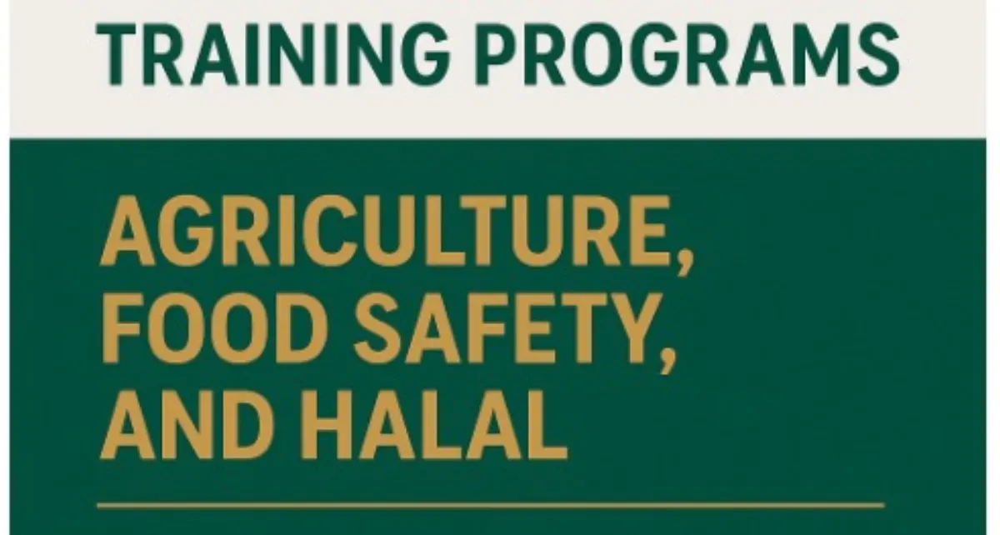
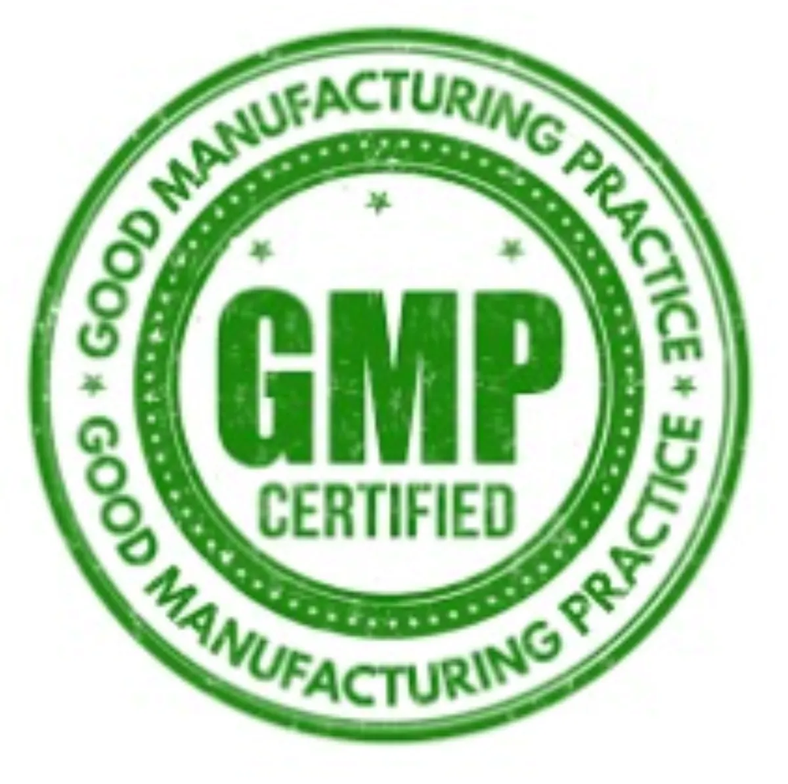
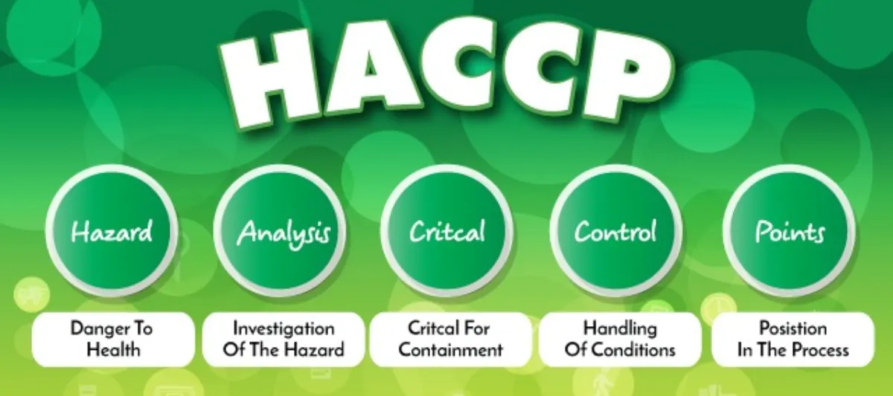
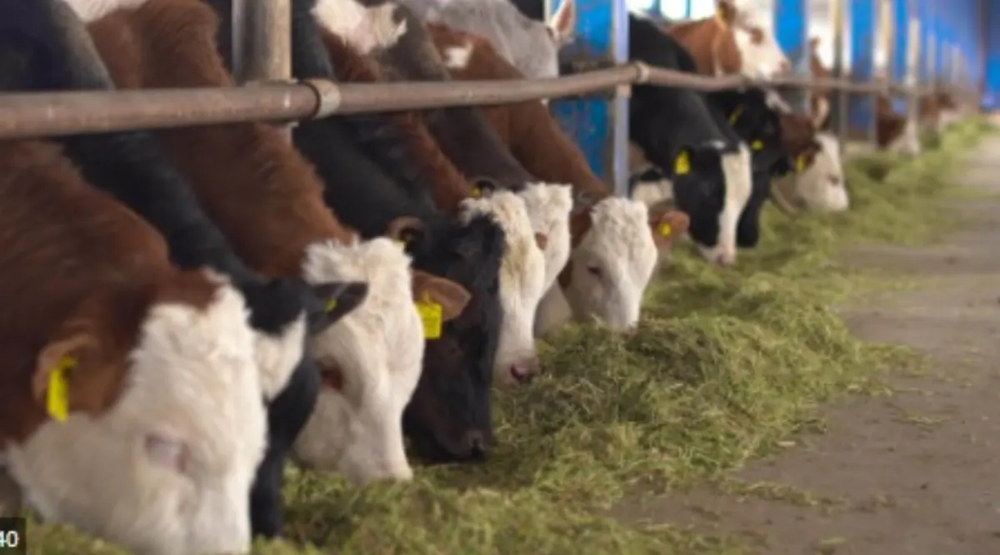
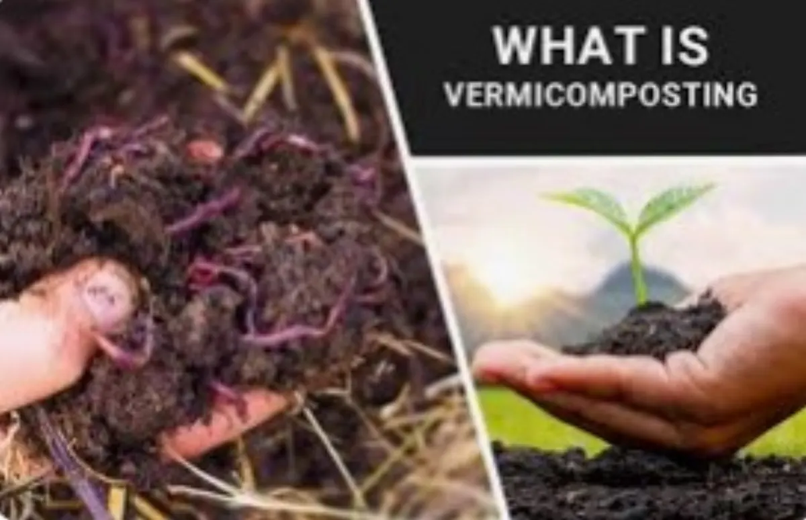

البرامج التدريبية المعتمدة
تطوير الكوادر في مجالات الحلال والجودة والزراعة
البرامج التدريبية المعتمدة من شركة SGSC
نؤهل الكوادر والمنشآت لمنح تدريب وفق أرقى المواصفات.
أولًا: مجال المنتجات الحلال (منظومة المنتجات والخدمات الحلال)
منح شهادات تدريب معتمدة في المواصفات القياسية التالية:
- UAE.S 2055-1 · GSO 2055-1 · OIC/SMIIC-1الاشتراطات العامة للأغذية الحلال: التدريب وفق المواصفات القياسية.
- GSO 993 · ES 7729الذبح الحلال: اشتراطات الذبح وفق الشريعة الإسلامية طبقًا للمواصفات.
- GSO 2652التغليف الحلال: لضمان امتثال مواد التعبئة حسب المواصفة.
- السياحة الحلالإعداد الفرق الحلال داخل المنشآت السياحية (الفنادق) والمطاعم.
ثانيًا: مجال الجودة الغذائية (منظومة الجودة وسلامة الغذاء)
منح شهادات تدريب وتأهيل في أنظمة الجودة الدولية:
- GMP & GHPممارسات التصنيع الجيد والاشتراطات الصحية الجيدة لمنع التلوث.
- HACCPنظام تحليل المخاطر ونقاط التحكم الحرجة.
- ISO 22000نظام إدارة سلامة الغذاء العالمي.
- FSSC 22000التدريب على المعيار الأعلى عالميًا والمعتمد من (GFSI) لفتح أبواب التصدير الدولي؛ نظام اعتماد سلامة الغذاء.


ثالثًا: مجال الزراعة وتدوير المخلفات العضوية
منح شهادات تدريب وتأهيل في:
- إنشاء مزارع تسمين العجول، ومزارع الألبان، ومزارع الخراف.
- إنتاج السيلاج من الذرة الشامية.
- إنتاج الفيرمي كومبوست.
- تدوير المخلفات الزراعية وبقايا المحاصيل.
- تدريب على تنسيق الحدائق.
- تدريب على إدارة الزراعات المحمية.


إجراءات العمل والتدريب
تضم شركة SGSC فريقًا متخصصًا من الخبراء لتقديم الخدمات التدريبية والتقييم وفق أعلى المعايير، وذلك من خلال:
التدريب والتقييم الحضوري
إرسال مدرِّب معتمد إلى موقع الشركة أو المصنع، وتنفيذ البرنامج التدريبي بشكل مباشر، مع إجراء اختبار قبلي وبعدي وقياس نسبة الحضور.
التدريب والتقييم عبر الإنترنت (عن بُعد)
توفير رابط تدريب عبر الإنترنت مع مدرب معتمد، وتنفيذ البرنامج بشكل تفاعلي عن بعد، مع إجراء اختبار قبلي وبعدي ومتابعة إلكترونية للحضور.
الاعتماد وإصدار الشهادات
يتم اعتماد نتائج التدريب والحضور من قبل شركة SGSC، ويحصل المتدربون على شهادة معتمدة بالحضور أو اجتياز التدريب.